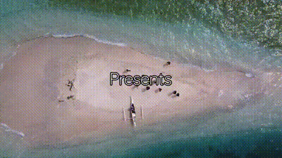
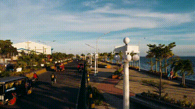
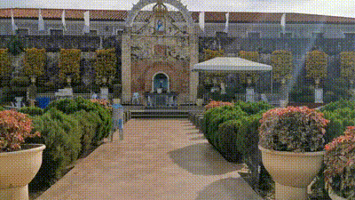
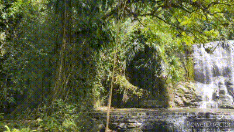
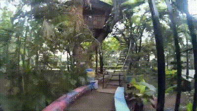
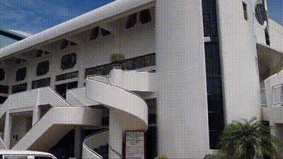

Places to visit in Zamboanga City!
Zamboanga City offers various places to explore and experience. Explore now it's known for its rich cultural heritage, vibrant festivals, and bustling port.
Join us! Book now at @ofendoball-tickets.comes
Santa Cruz Island
Santa Cruz Island in Zamboanga is a picturesque destination known for its stunning pink sand beach and vibrant coral reefs. As part of the Zamboanga City Special Economic Zone, it offers visitors the opportunity to explore its natural beauty while supporting conservation efforts. Steeped in history, remnants of World War II bunkers add to its allure, making it a fascinating blend of natural and historical attractions.
Boulevard
Boulevard in Zamboanga City stretches gracefully along the coastline, inviting locals and visitors alike to indulge in its charming ambiance. As the sun dips low over the Basilan Strait, the promenade comes alive with the tantalizing aromas of freshly prepared seafood from its bustling restaurants. Against this picturesque backdrop, cultural landmarks such as the Zamboanga City Hall and Rizal Park stand as silent witnesses to the city's rich heritage. Families gather for leisurely strolls, while joggers and cyclists embrace the refreshing sea breeze. Boulevard is more than just a waterfront destination; it's a vibrant tapestry of cultural diversity, recreational pursuits, and culinary delights, offering a captivating experience for all who venture along its shores.
Fort Pilar Shrine
Fort Pilar, located in Zamboanga City, Philippines, is a historic fortress that stands as a symbol of the city's resilience and cultural heritage. It was originally built by the Spanish in the 17th century as a defense against pirates and foreign invaders. Today, Fort Pilar houses a shrine dedicated to Our Lady of the Pillar, a revered Marian figure. The fortress is a popular destination for tourists and pilgrims alike, offering insights into Zamboanga's rich history and religious traditions.
Merloquet Falls
Merloquet Falls is a stunning waterfall located in Zamboanga City, Philippines. Tucked away in the lush jungle of Barangay Sibulao, this natural wonder cascades gracefully into a tranquil pool below, surrounded by towering cliffs and verdant foliage. Visitors can embark on a scenic trek through the forest to reach the falls, where they can swim in the refreshing waters and marvel at the beauty of the cascading streams. Merloquet Falls is a popular destination for nature lovers and adventure seekers, offering a serene escape from the hustle and bustle of city life.
Pasonanca Park
Pasonanca Park, located in Zamboanga City, Philippines, is a serene and picturesque green space known for its lush vegetation, scenic trails, and recreational facilities. The park is famous for its century-old trees, particularly the gigantic acacia tree that serves as the park's centerpiece. Visitors can enjoy leisurely walks, picnics, and family outings amidst the tranquil ambiance of the park. There are also amenities such as swimming pools, cottages, and playgrounds, making it a popular destination for locals and tourists alike.
KCC Mall De Zamboanga
KCC Mall de Zamboanga is one of the largest shopping centers in Zamboanga City, Philippines. It offers a wide range of retail stores, dining options, and entertainment facilities, making it a popular destination for shopping and leisure activities. The mall features both local and international brands, ensuring a diverse shopping experience for visitors. Additionally, KCC Mall de Zamboanga often hosts events and promotions, adding to the vibrant atmosphere of the mall.
Metropolitan Cathedral of Immaculate Conception
The Metropolitan Cathedral of the Immaculate Conception, commonly referred to as the Zamboanga City Cathedral, is a prominent religious landmark in Zamboanga City, Philippines. It is known for its striking architecture, featuring a combination of Gothic and Romanesque styles. The cathedral's interior is adorned with beautiful stained glass windows, intricate carvings, and religious artwork, creating a serene and reverent atmosphere for worshipers and visitors alike. As the seat of the Archdiocese of Zamboanga, it holds significant cultural and religious importance for the local Catholic community.